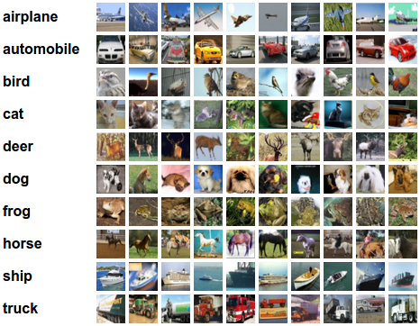
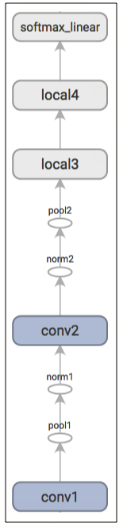
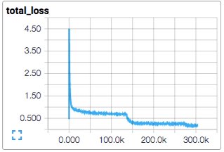
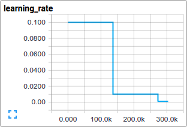
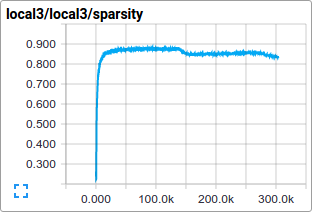
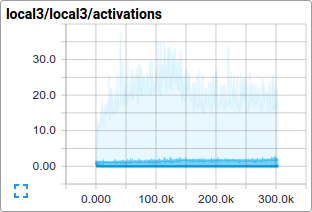
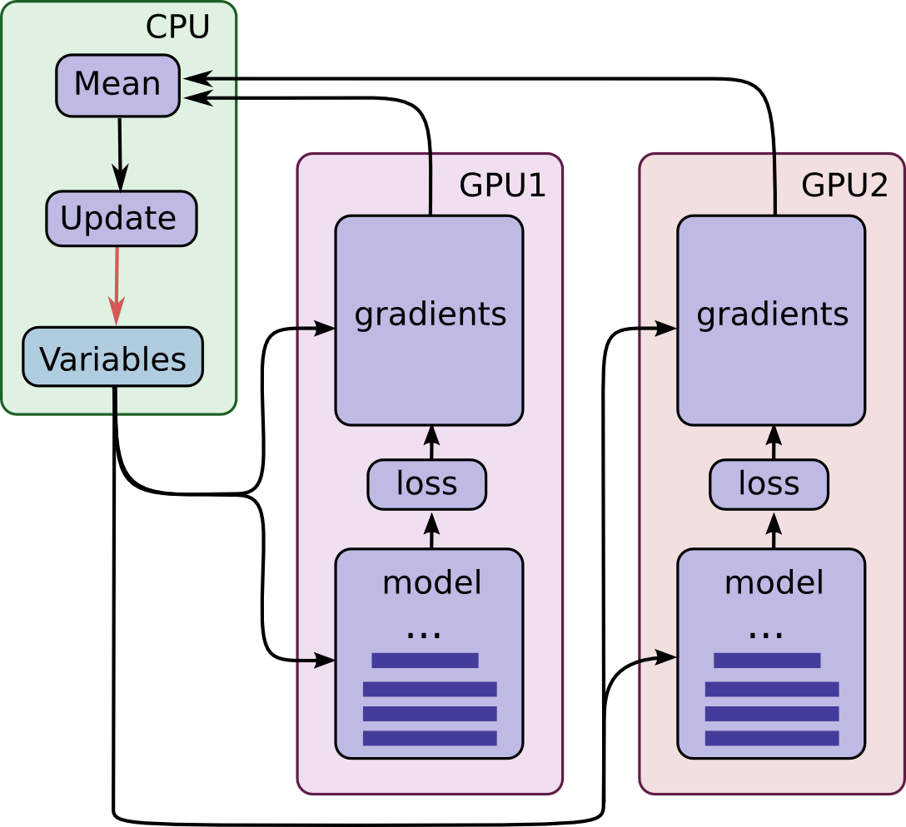

卷积神经网络
Table of Contents
对CIFAR-10 数据集的分类是机器学习中一个公开的基准测试问题，其任务是对一组大小为32x32的RGB图像进行分类，这些图像涵盖了10个类别： 飞机， 汽车， 鸟， 猫， 鹿， 狗， 青蛙， 马， 船以及卡车

本教程的目标是建立一个用于识别图像的相对较小的卷积神经网络，在这一过程中，本教程会：
- 着重于建立一个规范的网络组织结构，训练并进行评估
- 为建立更大规模更加复杂的模型提供一个范例
选择CIFAR-10是因为它的复杂程度足以用来检验TensorFlow中的大部分功能，并可将其扩展为更大的模型。与此同时由于模型较小所以训练速度很快，比较适合用来测试新的想法，检验新的技术
重点
CIFAR-10 教程演示了在TensorFlow上构建更大更复杂模型的几个种重要内容：
- 相关核心数学对象如：
- 卷积
- 修正线性激活
- 最大池化
- 局部响应归一化
- 训练过程中一些网络行为的可视化，这些行为包括：
- 输入图像
- 损失情况
- 网络行为的分布情况
- 梯度
- 算法学习参数的移动平均值的计算函数，以及在评估阶段使用这些平均值提高预测性能
- 实现了一种机制，使得学习率随着时间的推移而递减
- 为输入数据设计预存取队列，将磁盘延迟和高开销的图像预处理操作与模型分离开来处理
同时也提供了模型的多GPU版本，用以表明：
- 可以配置模型后使其在多个GPU上并行的训练
- 可以在多个GPU之间共享和更新变量值
模型架构
本教程中的模型是一个多层架构，由卷积层和非线性层交替多次排列后构成。这些层最终通过全连通层对接到softmax分类器上。这一模型除了最顶部的几层外，基本跟Alex Krizhevsky提出的模型一致
在一个GPU上经过几个小时的训练后，该模型最高可以达到86%的精度。细节请查看下面的描述以及代码。模型中包含了1,068,298个学习参数，对一副图像进行分类大概需要19.5M个乘加操作
代码组织
本教程的代码位于tensorflow/models/image/cifar10/
| 文件 | 作用 |
| cifar10_input.py | 读取本地CIFAR-10的二进制文件格式的内容 |
| cifar10.py | 建立CIFAR-10的模型 |
| cifar10_train.py | 在CPU或GPU上训练CIFAR-10的模型 |
| cifar10_multi_gpu_train.py | 在多GPU上训练CIFAR-10的模型 |
| cifar10_eval.py | 评估CIFAR-10模型的预测性能 |
CIFAR-10 模型
CIFAR-10 网络模型部分的代码位于 cifar10.py. 完整的训练图中包含约765个操作。但是发现通过下面的模块来构造训练图可以最大限度的提高代码复用率:
- 模型输入：包括inputs() 、 distorted_inputs()等一些操作，分别用于读取CIFAR的图像并进行预处理，做为后续评估和训练的输入
- 模型预测：包括inference()等一些操作，用于进行统计计算，比如在提供的图像进行分类； adds operations that perform inference, i.e. classification, on supplied images
- 模型训练：包括loss() and train()等一些操作，用于计算损失、计算梯度、进行变量更新以及呈现最终结果
模型输入
输入模型是通过 inputs() 和 distorted_inputs() 函数建立起来的，这2个函数会从CIFAR-10二进制文件中读取图片文件，由于每个图片的存储字节数是固定的，因此可以使用 tf.FixedLengthRecordReader 函数
图片文件的处理流程如下：
- 图片会被统一裁剪到24x24像素大小，裁剪中央区域用于评估或随机裁剪用于训练
- 图片会进行近似的白化处理，使得模型对图片的动态范围变化不敏感
对于训练，另外采取了一系列随机变换的方法来人为的增加数据集的大小：
- 对图像进行随机的左右翻转
- 随机变换图像的亮度
- 随机变换图像的对比度
可以在Images页的列表中查看所有可用的变换，对于每个原始图还附带了一个image_summary，以便于在TensorBoard中查看。这对于检查输入图像是否正确十分有用
从磁盘上加载图像并进行变换需要花费不少的处理时间。为了避免这些操作减慢训练过程，在16个独立的线程中并行进行这些操作，这16个线程被连续的安排在一个TensorFlow队列中
模型预测
模型的预测流程由inference()构造，该函数会添加必要的操作步骤用于计算预测值的logits，其对应的模型组织方式如下所示：
| Layer 名称 | 描述 |
| conv1 | 实现卷积 以及 rectified linear activation |
| pool1 | max pooling |
| norm1 | 局部响应归一化 |
| conv2 | 卷积 and rectified linear activation |
| norm2 | 局部响应归一化 |
| pool2 | max pooling |
| local3 | 基于修正线性激活的全连接层 |
| local4 | 基于修正线性激活的全连接层 |
| softmax_linear | 进行线性变换以输出 logits |
这里有一个由TensorBoard绘制的图形，用于描述模型建立过程中经过的步骤：

inputs() 和 inference() 函数提供了评估模型时所需的所有构件
模型训练
训练一个可进行N维分类的网络的常用方法是使用多项式逻辑回归，又被叫做 softmax 回归 在网络的输出层上附加了一个softmax nonlinearity，并且计算归一化的预测值和label的one-hot encoding的交叉熵。在正则化过程中，会对所有学习变量应用权重衰减损失。模型的目标函数是求交叉熵损失和所有权重衰减项的和，loss()函数的返回值就是这个值
在TensorBoard中使用scalar_summary来查看该值的变化情况：

使用标准的梯度下降算法来训练模型，其学习率随时间以指数形式衰减

train() 函数会添加一些操作使得目标函数最小化，这些操作包括计算梯度、更新学习变量。train() 函数最终会返回一个用以对一批图像执行所有计算的操作步骤，以便训练并更新模型
执行
通过执行脚本cifar10_train.py来启动训练过程：
python cifar10_train.py
应该可以看到如下类似的输出：
Filling queue with 20000 CIFAR images before starting to train. This will take a few minutes. 2015-11-04 11:45:45.927302: step 0, loss = 4.68 (2.0 examples/sec; 64.221 sec/batch) 2015-11-04 11:45:49.133065: step 10, loss = 4.66 (533.8 examples/sec; 0.240 sec/batch) 2015-11-04 11:45:51.397710: step 20, loss = 4.64 (597.4 examples/sec; 0.214 sec/batch) 2015-11-04 11:45:54.446850: step 30, loss = 4.62 (391.0 examples/sec; 0.327 sec/batch) 2015-11-04 11:45:57.152676: step 40, loss = 4.61 (430.2 examples/sec; 0.298 sec/batch) 2015-11-04 11:46:00.437717: step 50, loss = 4.59 (406.4 examples/sec; 0.315 sec/batch)
脚本会在每10步训练过程后打印出总损失值，以及最后一批数据的处理速度：
- 第一批数据会非常的慢（大概要几分钟时间），因为预处理线程要把20,000个待处理的CIFAR图像填充到重排队列中
- 打印出来的损失值是最近一批数据的损失值的均值。请记住损失值是交叉熵和权重衰减项的和
- 打印结果中关于一批数据的处理速度是在Tesla K40C上统计出来的，如果你运行在CPU上，性能会比此要低
cifar10_train.py 会周期性的在检查点文件中保存模型中的所有参数，但是 不会对模型进行评估
可视化
cifar10_train.py输出的终端信息中提供了关于模型如何训练的一些信息，但是可能希望了解更多关于模型训练时的信息，比如：
- 损失是真的在减小还是看到的只是噪声数据？
- 为模型提供的图片是否合适？
- 梯度、激活、权重的值是否合理？
- 当前的学习率是多少？
TensorBoard提供了该功能，可以通过cifar10_train.py中的SummaryWriter周期性的获取并显示这些数据。比如可以在训练过程中查看local3的激活情况，以及其特征维度的稀疏情况：


相比于总损失，在训练过程中的单项损失尤其值得人们的注意。但是由于训练中使用的数据批量比较小，损失值中夹杂了相当多的噪声。在实践过程中，也发现相比于原始值，损失值的移动平均值显得更为有意义
评估模型
cifar10_eval.py 对模型进行了评估，利用 inference()函数重构模型，并使用了在评估数据集所有10,000张CIFAR-10图片进行测试。最终计算出的精度为 1:N，N=预测值中置信度最高的一项 与图片真实label匹配的频次
为了监控模型在训练过程中的改进情况，评估用的脚本文件会 周期性的在最新的检查点文件 上运行，这些检查点文件是由cifar10_train.py产生：
python cifar10_eval.py
可能会看到如下所示输出：
2015-11-06 08:30:44.391206: precision @ 1 = 0.860
评估脚本只是周期性的返回precision@1 在该例中返回的准确率是86%。cifar10_eval.py 同时也返回其它一些可以在TensorBoard中进行可视化的简要信息。可以通过这些简要信息在评估过程中进一步的了解模型
训练脚本会为 所有学习变量计算其移动均值 ，评估脚本则直接将 所有学习到的模型参数替换成对应的移动均值 。这一替代方式可以在评估过程中提升模型的性能
不要在同一块GPU上同时运行训练程序和评估程序，因为可能会导致内存耗尽 尽可能的在其它单独的GPU上运行评估程序，或者在同一块GPU上运行评估程序时先挂起训练程序
多个GPU
现代的工作站可能包含多个GPU进行科学计算。TensorFlow可以利用这一环境在多个GPU卡上运行训练程序
在并行、分布式的环境中进行训练，需要对训练程序进行协调。对于接下来的描述 模型拷贝 特指在一个数据子集中训练出来的模型的一份拷贝
如果对模型参数的采用异步方式更新将会导致次优的训练性能，这是因为可能会 基于一个旧的模型参数的拷贝 去训练一个模型。但与此相反采用完全同步更新的方式，其速度将会变得和 最慢的模型一样慢
在具有多个GPU的工作站中，每个GPU的速度基本接近，并且都含有足够的内存来运行整个CIFAR-10模型。因此选择以下方式来设计训练系统：
- 在每个GPU上放置单独的模型副本
- 等所有GPU处理完一批数据后再同步更新模型的参数
下图示意了该模型的结构：

可以看到，每一个GPU会用一批独立的数据计算梯度和估计值。这种设置可以非常有效的将一大批数据分割到各个GPU上
这一机制要求所有GPU能够共享模型参数。但是众所周知在 GPU之间传输数据非常的慢 因此决定在CPU上存储和更新所有模型的参数(对应图中绿色矩形的位置)。这样一来，GPU在处理一批新的数据之前会更新一遍的参数
图中所有的GPU是同步运行的。所有GPU中的梯度会累积并求平均值(绿色方框部分)。模型参数会利用所有模型副本梯度的均值来更新
在多个设备中设置变量和操作
在多个设备中设置变量和操作时需要做一些特殊的抽象。
需要把在单个模型拷贝中计算估计值和梯度的行为抽象到一个函数中。在代码中，称这个抽象对象为 tower 对于每一个 tower 都需要设置它的两个属性：
- 在一个tower中为所有操作设定一个唯一的名称。tf.name_scope()通过添加一个范围前缀来提供该唯一名称。比如，第一个tower中的所有操作都会附带一个前缀tower_0，示例：tower_0/conv1/Conv2D
- 在一个tower中运行操作的优先硬件设备。 tf.device() 提供该信息。比如，在第一个tower中的所有操作都位于 device('/gpu:0')范围中，暗含的意思是这些操作应该运行在第一块GPU上
为了在多个GPU上共享变量，所有的变量都绑定在CPU上，并通过tf.get_variable()访问
启动多个GPU上训练
可以通过使用cifar10_multi_gpu_train.py脚本来加速模型训练。该脚本是训练脚本的一个变种，使用多个GPU实现模型并行训练
python cifar10_multi_gpu_train.py --num_gpus=2
输出如下：
Filling queue with 20000 CIFAR images before starting to train. This will take a few minutes. 2015-11-04 11:45:45.927302: step 0, loss = 4.68 (2.0 examples/sec; 64.221 sec/batch) 2015-11-04 11:45:49.133065: step 10, loss = 4.66 (533.8 examples/sec; 0.240 sec/batch) 2015-11-04 11:45:51.397710: step 20, loss = 4.64 (597.4 examples/sec; 0.214 sec/batch) 2015-11-04 11:45:54.446850: step 30, loss = 4.62 (391.0 examples/sec; 0.327 sec/batch) 2015-11-04 11:45:57.152676: step 40, loss = 4.61 (430.2 examples/sec; 0.298 sec/batch) 2015-11-04 11:46:00.437717: step 50, loss = 4.59 (406.4 examples/sec; 0.315 sec/batch)